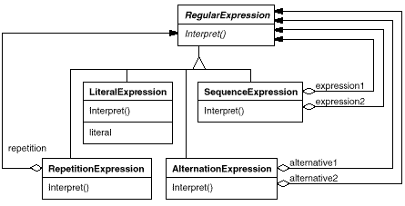
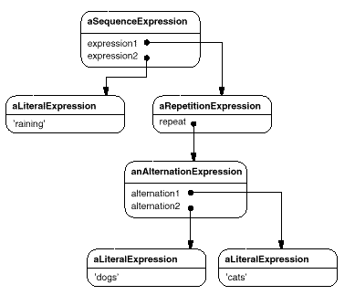
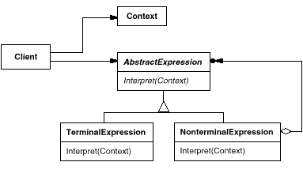

expression ::= literal | alternation | sequence | repetition |
'(' expression ')'
alternation ::= expression '|' expression
sequence ::= expression '&' expression
repetition ::= expression '*'
literal ::= 'a' | 'b' | 'c' | ... { 'a' | 'b' | 'c' | ... }*


raining & (dogs | cats) *





expression ::= literal | alternation | sequence | repetition |
'(' expression ')'
alternation ::= expression '|' expression
sequence ::= expression '&' expression
repetition ::= expression 'repeat'
literal ::= 'a' | 'b' | 'c' | ... { 'a' | 'b' | 'c' | ... }*
(('dog ' | 'cat ') repeat & 'weather')
'a' repeat
'a' repeat & 'bc'
'a' repeat & 'abc'
match: inputState
^ expression2 match: (expression1 match: inputState).
match: inputState
| finalState |
finalState := alternative1 match: inputState.
finalState addAll: (alternative2 match: inputState).
^ finalState
match: inputState
| aState finalState |
aState := inputState.
finalState := inputState copy.
[aState isEmpty]
whileFalse:
[aState := repetition match: aState.
finalState addAll: aState].
^ finalState
match: inputState
| finalState tStream |
finalState := Set new.
inputState
do:
[:stream | tStream := stream copy.
(tStream nextAvailable:
components size
) = components
ifTrue: [finalState add: tStream]
].
^ finalState
& aNode
^ SequenceExpression new
expression1: self expression2: aNode asRExp
repeat
^ RepetitionExpression new repetition: self
| aNode
^ AlternationExpression new
alternative1: self alternative2: aNode asRExp
asRExp
^ self
& aNode
^ SequenceExpression new
expression1: self asRExp expression2: aNode asRExp
repeat
^ RepetitionExpression new repetition: self
| aNode
^ AlternationExpression new
alternative1: self asRExp alternative2: aNode asRExp
asRExp
^ LiteralExpression new components: self
BooleanExp ::= VariableExp | Constant | OrExp | AndExp | NotExp |
'(' BooleanExp ')'
AndExp ::= BooleanExp 'and' BooleanExp
OrExp ::= BooleanExp 'or' BooleanExp
NotExp ::= 'not' BooleanExp
Constant ::= 'true' | 'false'
VariableExp ::= 'A' | 'B' | ... | 'X' | 'Y' | 'Z'
class BooleanExp {
public:
BooleanExp();
virtual ~BooleanExp();
virtual bool Evaluate(Context&) = 0;
virtual BooleanExp* Replace(const char*, BooleanExp&) = 0;
virtual BooleanExp* Copy() const = 0;
};
class Context {
public:
bool Lookup(const char*) const;
void Assign(VariableExp*, bool);
};
class VariableExp : public BooleanExp {
public:
VariableExp(const char*);
virtual ~VariableExp();
virtual bool Evaluate(Context&);
virtual BooleanExp* Replace(const char*, BooleanExp&);
virtual BooleanExp* Copy() const;
private:
char* _name;
};
VariableExp::VariableExp (const char* name) {
_name = strdup(name);
}
bool VariableExp::Evaluate (Context& aContext) {
return aContext.Lookup(_name);
}
BooleanExp* VariableExp::Copy () const {
return new VariableExp(_name);
}
BooleanExp* VariableExp::Replace (
const char* name, BooleanExp& exp
) {
if (strcmp(name, _name) == 0) {
return exp.Copy();
} else {
return new VariableExp(_name);
}
}
class AndExp : public BooleanExp {
public:
AndExp(BooleanExp*, BooleanExp*);
virtual ~ AndExp();
virtual bool Evaluate(Context&);
virtual BooleanExp* Replace(const char*, BooleanExp&);
virtual BooleanExp* Copy() const;
private:
BooleanExp* _operand1;
BooleanExp* _operand2;
};
AndExp::AndExp (BooleanExp* op1, BooleanExp* op2) {
_operand1 = op1;
_operand2 = op2;
}
bool AndExp::Evaluate (Context& aContext) {
return
_operand1->Evaluate(aContext) &&
_operand2->Evaluate(aContext);
}
BooleanExp* AndExp::Copy () const {
return
new AndExp(_operand1->Copy(), _operand2->Copy());
}
BooleanExp* AndExp::Replace (const char* name, BooleanExp& exp) {
return
new AndExp(
_operand1->Replace(name, exp),
_operand2->Replace(name, exp)
);
}
(true and x) or (y and (not x))
BooleanExp* expression;
Context context;
VariableExp* x = new VariableExp("X");
VariableExp* y = new VariableExp("Y");
expression = new OrExp(
new AndExp(new Constant(true), x),
new AndExp(y, new NotExp(x))
);
context.Assign(x, false);
context.Assign(y, true);
bool result = expression->Evaluate(context);
VariableExp* z = new VariableExp("Z");
NotExp not_z(z);
BooleanExp* replacement = expression->Replace("Y", not_z);
context.Assign(z, true);
result = replacement->Evaluate(context);